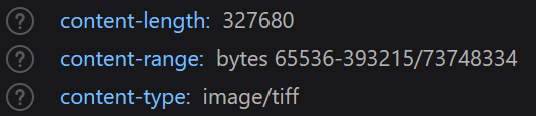

Just another COG in the machine: all about Cloud Optimized Geotiffs
Kris Johnson, NRRI - GIS/LIS 2023
Speakers notes go here.
Cloud Optimized GeoTIFF (COGs):
- What are they?
- How can I make one for my kids?
- How (and why) would I use one?
- Examples
- My use case
 Who's heard of COGs? Used them?
Who's heard of COGs? Used them?
A
Cloud Optmized GeoTIFF
is
a regular GeoTIFF file, hosted on a
HTTP file server, with an
internal organization that
allows clients issuing ​HTTP
GET range requests to ask for just
the parts of a file they need.
Let's break that definition down
Speakers notes go here.
A regular GeoTIFF
Speakers notes go here.
GeoTIFF is a public domain metadata standard that enables
georeferencing information to be embedded within an image (TIFF)
file.
Essentially, a common
raster data format
Speakers notes go here.
A regular GeoTIFF
...with an internal organization...
Speakers notes go here.
Translation: Tiling and Overviews
and compression
Speakers notes go here.
Internal Tiling
Speakers notes go here.
Tiles
- Each tile is its own TIFF image
- With its own metadata and header
- Usually 256x256, but can be any size
Speakers notes go here.
Overviews
 Speakers notes go here.
Speakers notes go here.
Overviews
Allow for smaller, lower resolution versions to be used in place of the
original
Speakers notes go here.
Compression:
just allows for even faster streaming to clients
Speakers notes go here.
A web server capable of HTTP range requests
Speakers notes go here.
object storage in the ☁️
Speakers notes go here.
files on a traditional web server
Speakers notes go here.
A web server capable of HTTP range requests
Speakers notes go here.
Look for
Accept-Ranges: bytes
in the response header
Speakers notes go here.
Range requests (AKA byte serving)
 Speakers notes go here.
Speakers notes go here.
Pulling it all together:
Allows clients to request only the relevant portions of the image, and
not the whole file üòÖ
Speakers notes go here.
How can I make one?
Speakers notes go here.
GDAL
what else?
Speakers notes go here.
since version 3.1
gdalwarp -of COG intput.tif outputCOG.tif
gdal_translate world.tif world_webmerc_cog.tif -of COG
-co TILING_SCHEME=GoogleMapsCompatible -co COMPRESS=JPEG
https://gdal.org/drivers/raster/cog.html
Speakers notes go here.
Then, load it onto a web server and you're ready to üö¢
Speakers notes go here.
How do you use them?
Speakers notes go here.
Anywhere you can use a regular GeoTIFF, actually
Speakers notes go here.
- Desktop GIS
- Web Maps
- Data Sharing and Distribution
Speakers notes go here.
Why use a ⚙️?
- Improved performance / Reduced cost
- Scalability
- Accessibility / Interoperability
- Reduced data duplication
Improved performance / Reduced cost
- efficient access
- reduced bandwidth consumption
internal tiling and overviews
Scalability
Efficient streaming enables integration with cloud-based workflows
Server-side (the traditional approach)
- WMS (for rendering)
- WCS (for analyzing)
Client-side (raster rendering and analysis in your browser)
- parse multiple formats (remote, local, via ArrayBuffer)
- compression
- resampling
- bounding box
Speakers notes go here.
Essentially, the raster equivalent of GeoJSON ü§Ø
Speakers notes go here.
-- OR --
server-less raster analysis üí•
Speakers notes go here.
Complimentary Technologies
I'm not an expert so I need to rely on these
Speakers notes go here.
Georaster
- simplifies the JavaScript interface to geotiff.js
Speakers notes go here.
How to use it?
Speakers notes go here.
load GeoTIFF
fetch(url_to_geotiff_file)
.then((response) => {
response.arrayBuffer())
Speakers notes go here.
parse ArrayBuffer to Georaster
.then((arrayBuffer) => {
parseGeoraster(arrayBuffer)
.then((georaster) => {
The ArrayBuffer object is used to represent a generic, fixed-length raw
binary data buffer. It is an array of bytes, often referred to in other
languages as a "byte array". You cannot directly manipulate the contents
of an ArrayBuffer; instead, you create one of the typed array objects or
a DataView object which represents the buffer in a specific format, and
use that to read and write the contents of the buffer.
create Leaflet layer from Georaster
var layer = new GeoRasterLayer({
georaster: georaster,
opacity: 0.7,
});
layer.addTo(map);{
This extends L.gridLayer so all the same options apply
Examples
Speakers notes go here.
LandsatLook
- a tool that allows rapid online viewing and access to the USGS Landsat
Collection 2 data
LandsatLook is a tool that allows rapid online viewing and access to
the USGS Landsat Collection 2 data. LandsatLook leverages resources
available via a commercial cloud environment including Cloud Optimized
GeoTIFF (COG) and Spatio Temporal Asset Catalog (STAC) metadata.
add your own GeoTIFF and play around
add your own GeoTIFF and play around
pixelValuesToColorFn: function(pixelValues) {
var pixelValue = pixelValues[0]; // there's just one band in this raster
if (pixelValue === 0) return null;
// scale to 0 - 1 used by chroma
var scaledPixelValue = (pixelValue - min) / range;
var color = scale(scaledPixelValue).hex();
return color;
},
pixelValuesToColorFn: values => {
const r = Math.round(values[0] + 1.40200 * (values[2] - 0x80));
const g = Math.round(values[0] - 0.34414 * (values[1] - 0x80) - 0.71414 * (values[2] - 0x80));
const b = Math.round(values[0] + 1.77200 * (values[1] - 0x80));
return `rgb(${r},${g},${b})`;
}
customDrawFunction: function({ context, x, y, width, height, values }) {
var value = values[0];
var arrowSize = width / 2.5;
context.save();
context.translate(x, y);
context.rotate((90+value)*Math.PI/180);
context.beginPath();
context.moveTo(-arrowSize/2, 0);
context.lineTo(+arrowSize/2, 0);
context.moveTo(arrowSize*0.25, -arrowSize*0.25);
context.lineTo(+arrowSize/2, 0);
context.lineTo(arrowSize*0.25, arrowSize*0.25);
context.stroke();
context.restore();
}
GeoTIFF is using EPSG:32615 (WGS 84 / UTM zone 15N)
add your own GeoTIFF and play around
Request headers
Response headers
add your own GeoTIFF and play around
add your own GeoTIFF and play around
Use this approach when:
- You don't have access to a server
- You don't want to mess with a server
-
You want to speed up imagery/raster load times (by using
COGs)
- You want client-side imagery/raster analysis
Thank you!
Kris Johnson, NRRI/UMD
kristofj@d.umn.edu